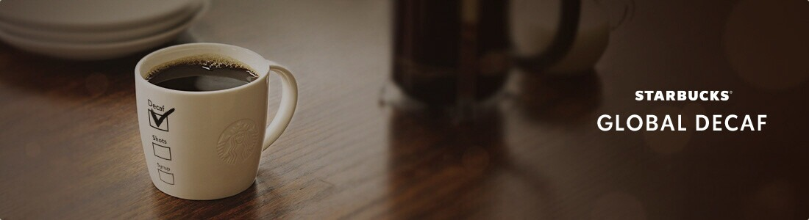

The coffee you love, without the caffeine.
안전하게 카페인을 제거하고, 맛과 향은 그대로
유독 커피를 많이 마시게 되는 날, 바쁘게 보낸 하루의 마무리 즈음.
당신이 가장 사랑하는 스타벅스 디카페인 커피 한 잔과 함께, 카페인은 덜어내고 마음을 채우는 시간을 가져보세요.

유독 커피를 많이 마시게 되는 날, 바쁘게 보낸 하루의 마무리 즈음.
당신이 가장 사랑하는 스타벅스 디카페인 커피 한 잔과 함께, 카페인은 덜어내고 마음을 채우는 시간을 가져보세요.
* 생두 기준(w/w%), 디카페인 수치 w/w%는 음료가 아닌
생두를 기준으로 하며, 글로벌 공인 분석 기관 검사 결과에 근거함
스타벅스 글로벌 기준에 따라 CO2 초임계 공정을 거쳐
화학 용매 없이 안전하게 99.9% 디카페인 원두로 만듭니다.
따뜻한 물에 담가 수분을 머금은 부드러운 생두에
오로지 CO2와 스팀만을 사용하여 효과적으로 카페인을 제거하고,
커피 본연의 맛과 향은 그대로 지켜냅니다.
스타벅스 글로벌 디카페인은 커피 본연의 맛과 향을 온전히 담아냅니다.
주 2회 이상 스타벅스 아메리카노를 즐겨 마시는 고객들을 대상으로 블라인드 테스트*를 진행한 결과,
응답자의 80% 이상이 스타벅스 디카페인 아메리카노에서 시그니처 원두의 고유한 풍미를 느낄 수 있었다고 답했습니다.
이처럼 스타벅스 글로벌 디카페인은 화학 제품 없이 카페인을 안전하게 제거하면서,
깊고 균형 잡힌 커피 경험은 변함없이 즐길 수 있는 온전한 선택지입니다.
*고객 대상 스타벅스 음료 관능평가(2025년 4월 4일 진행), 전체 응답자수=104명
하프 디카페인과 풀 디카페인 중 취향에 맞는 원두를 선택하세요.
가볍게 카페인을 즐기고 싶을 땐 하프 디카페인,
카페인은 덜어내고 커피의 풍미만을 즐기고 싶을 땐 풀 디카페인으로.
어떤 원두를 선택하던 스타벅스 글로벌 디카페인은
언제나 커피 본연의 맛과 향을 그대로 담아냅니다.